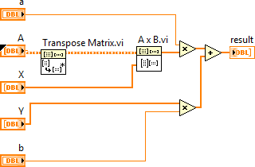
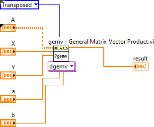

While LabVIEW provides basic Linear Algebra VIs, you can use the Basic Linear Algebra Subroutines VIs for advanced linear algebra algorithms. Use the Basic Linear Algebra Subroutines VIs to combine multiple linear algebra operations, reduce data copying in LabVIEW, and optimize execution. Therefore, if you have limited memory, use the Basic Linear Algebra Subroutines VIs.
 |
Note You can use the Basic Linear Algebra Subroutines VIs only in the LabVIEW Full and Professional Development Systems. |
For example, the following expression combines linear algebra functions:
where α is scalar, A is a matrix, and X and Y are vectors.
With linear algebra VIs, you need five different VIs and functions to perform this calculation, as shown in the following block diagram.

To simplify the code on a block diagram, you can replace multiple VIs and functions with the Basic Linear Algebra Subroutines VIs. For the current example, the gemv - General Matrix-Vector Product VI simplifies the code, as shown in the following block diagram.
